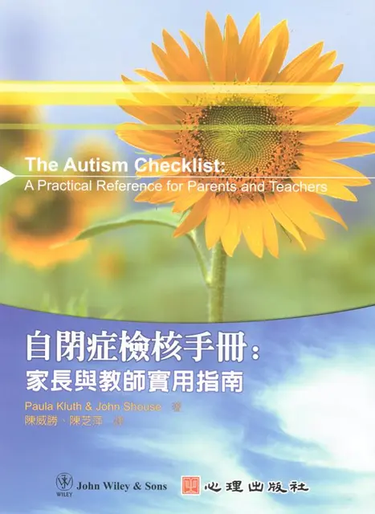
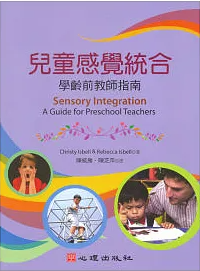
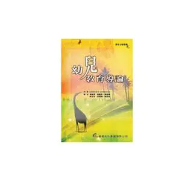

譯作 · Translation
查看出版品 →
職能治療實務：臨床病歷撰寫（第三版）
聚焦職能治療臨床紀錄、專業溝通、倫理法律、紀錄格式與行政實務，適合職能治療學生與臨床工作者使用。
從職能治療、精神健康、感覺統合、自閉症到幼兒教育， 這些著作與譯作記錄了不同階段的專業學習，也讓知識能以另一種形式被傳遞與使用。
出版對我而言，不只是留下文字； 更是把臨床、教育與專業知識重新整理， 讓學生、專業工作者、教師與家庭都能找到可使用的參考。
點擊「查看出版品」可前往目前整理的外部書店頁面。 部分較早出版品可能因庫存狀況而暫時無法購買。
聚焦職能治療臨床紀錄、專業溝通、倫理法律、紀錄格式與行政實務，適合職能治療學生與臨床工作者使用。

以容易查閱的檢核形式，整理自閉症光譜兒童與青少年在家庭、學校及支持情境中可採取的實務策略。

提供學齡前教師辨識感覺處理需求與安排教室活動的實務建議，讓感覺統合理論更容易進入日常教育現場。

將感覺統合理論轉化為可理解、可執行的活動與環境策略，支持自閉症及其他發展障礙兒童的學習與生活參與。

從發展觀點探討學齡前兒童的心理健康、早發性心理疾患、評估與治療，兼顧研究基礎與臨床實務。

涵蓋精神健康職能治療的專業基礎、臨床推理、評估介入、治療媒介、精神疾病與組織經營管理等實務內容。

從幼兒教育專業、理論到實務、家庭與社區、多元文化、適性教學與科技等面向，建立幼兒教育的整體基礎。
PUBLICATIONS · ALLEN MIND LAB
← Back to Home